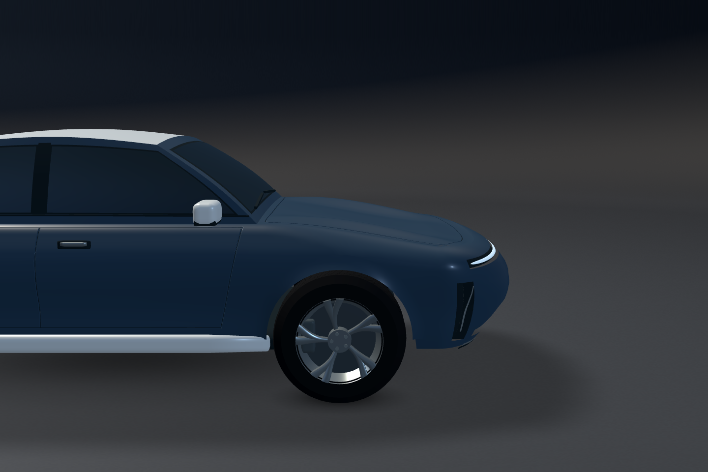
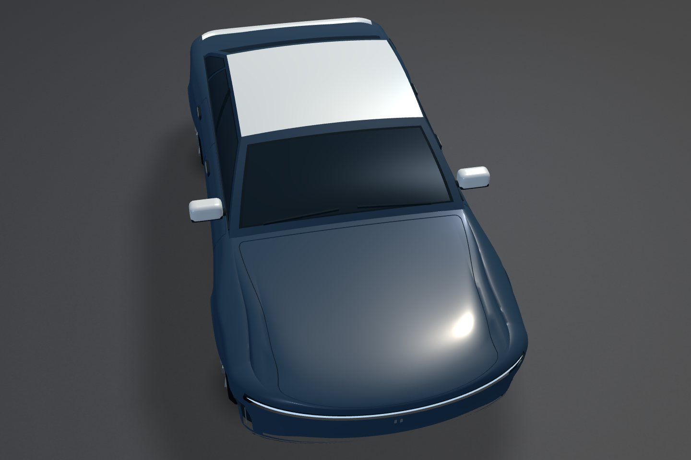
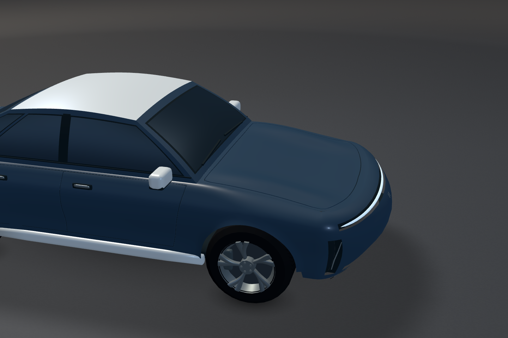
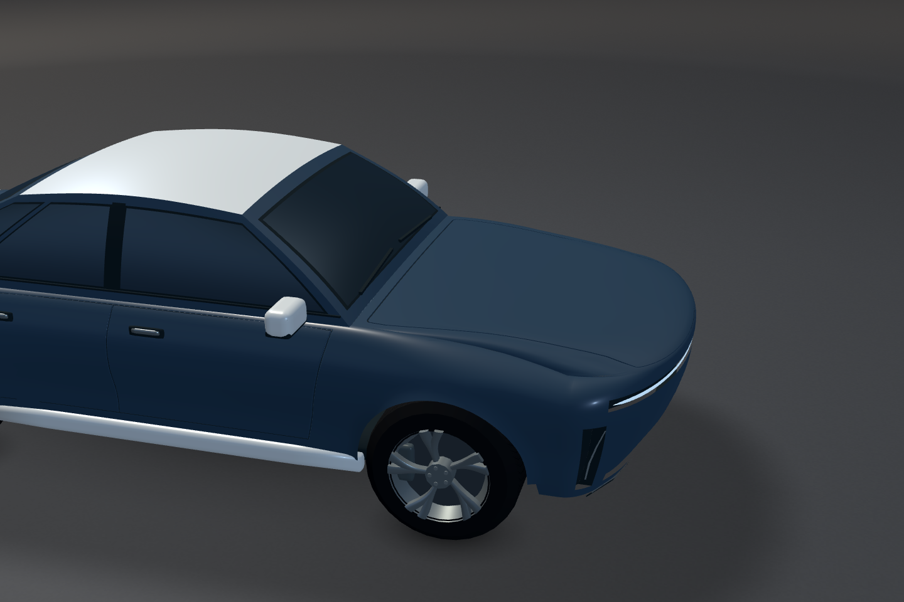
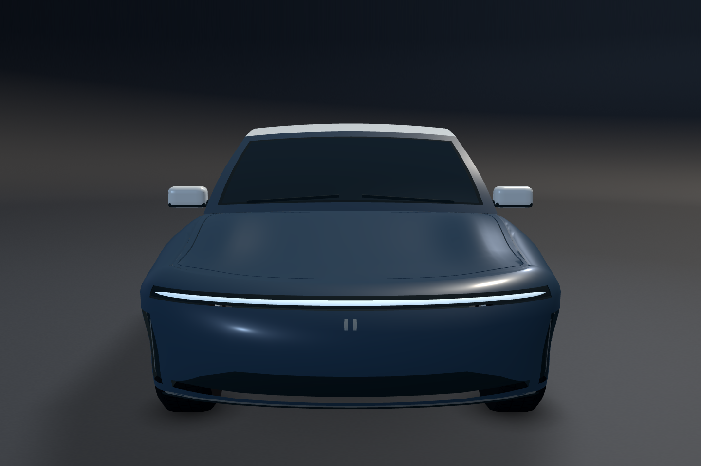
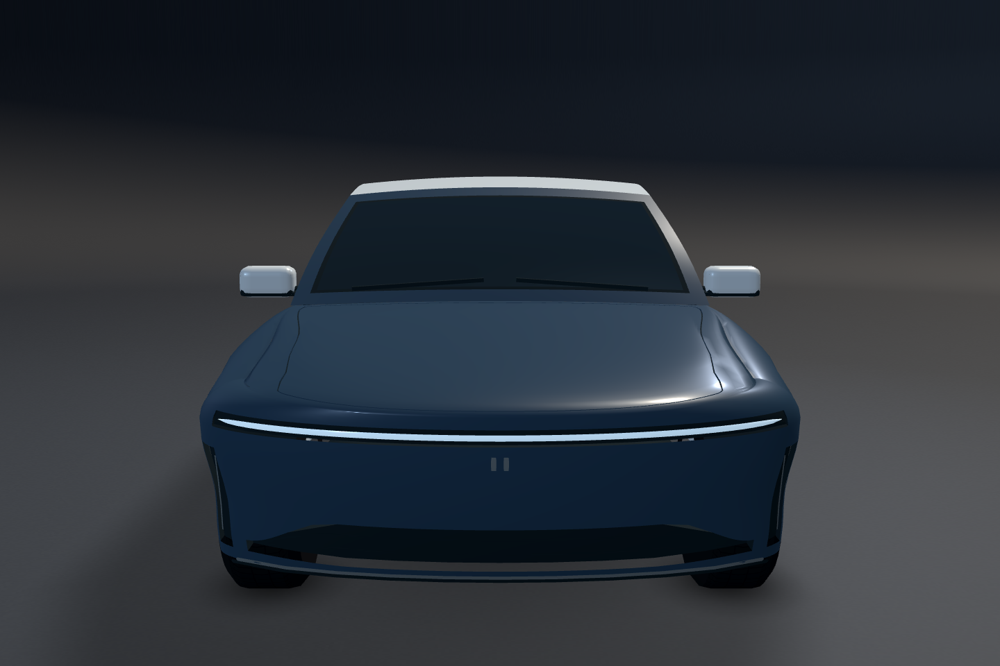
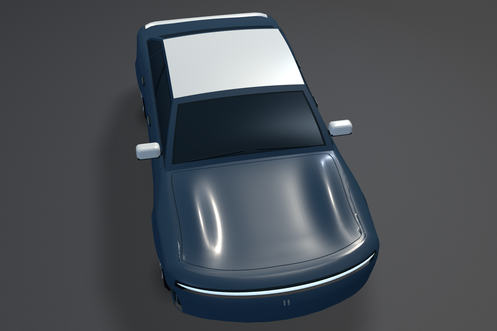
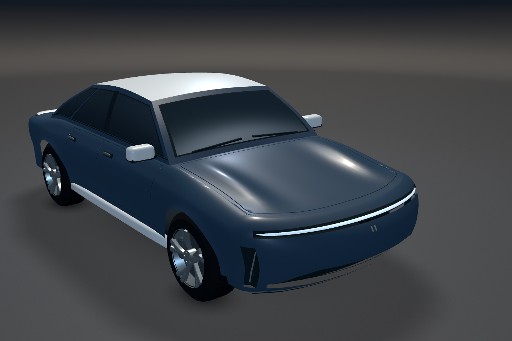
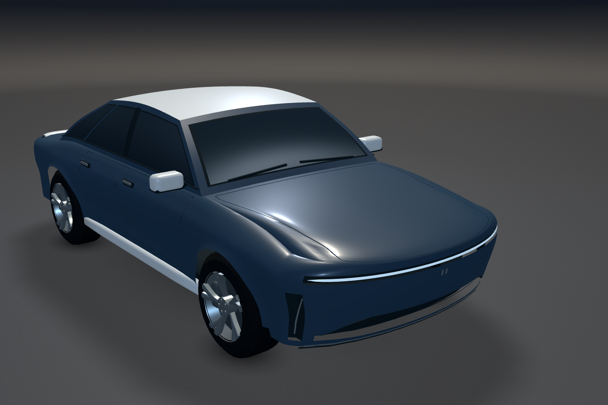

Matched native views of the exact rejected S-shaped nose and its correction, using the supplied side-view direction and blue/white appearance.
The hood flows into the light brow, the fitted panel tapers inward, and the lid and border share consistent shading normals. Actual mesh sections and neighbouring normals test the correction.
Previous normal method on the same geometry | Corrected high-angle view
Desktop Mobile owner-angle view · Actual Garage · Measurements and validation








